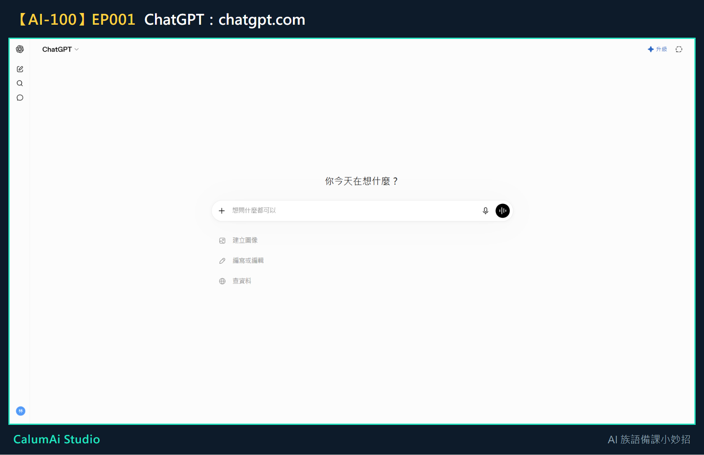
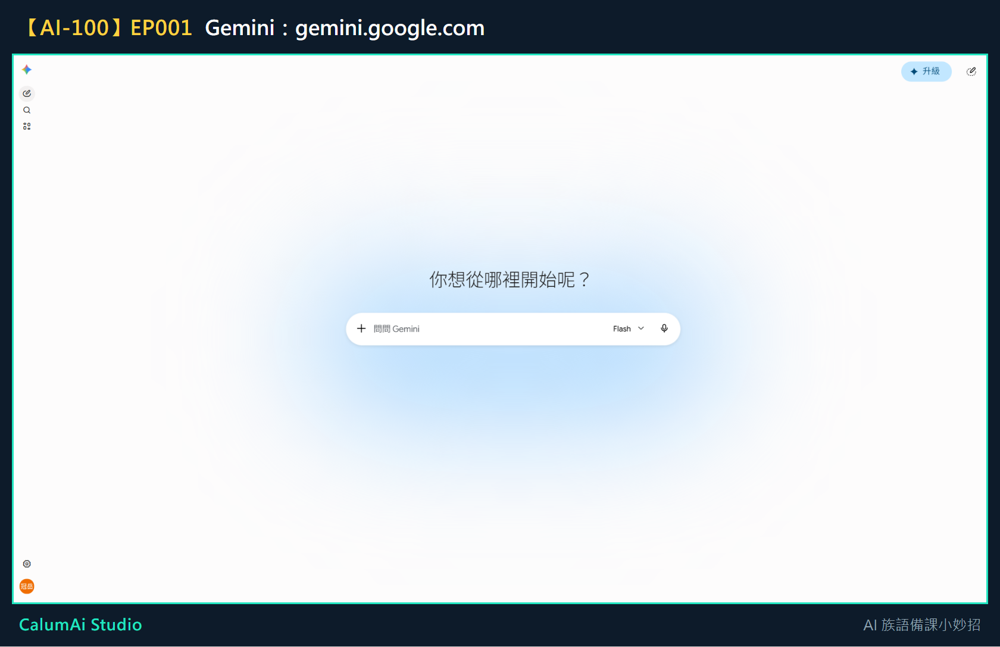

EP001 講義：今天，我們來認識 AI
本集不教操作，是讓老師先認識「AI 是誰、能幫上什麼忙」。這份講義整理今天認識的重點，方便之後回頭查。
今天只做一件事
先認識三位可以幫忙備課的 AI 小助手，還不用動手操作。
為什麼要學這個
以前備一堂課，可能要翻好多本教材、查好多網站，還要自己設計活動——這些事情很重要，但真的很花時間。AI 可以想成一位很認真的助教，幫老師把想法整理得更快、更清楚。
AI 不會取代老師。因為真正了解學生的人，永遠都是老師。AI 可以幫忙想點子、整理資料，但最後要不要用、怎麼用，還是老師決定。
今天認識的三位新朋友
| 工具 | 像什麼 | 最適合做什麼 |
|---|---|---|
| ChatGPT | 一位很會聊天、說故事的夥伴 | 把想法說出來、請它幫忙想故事、設計遊戲、寫教案 |
| Gemini | 一位圖書館管理員 | 查最新的資訊、找參考資料 |
| Gemini Notebook | 老師專屬的知識庫 | 把老師自己的教材整理起來，之後找重點、查資料會快很多 |
名稱變動提醒：第三個工具原本叫「NotebookLM」，Google 已將它改名為「Gemini Notebook」。影片中如果聽到 NotebookLM，指的就是同一個工具。
它們長這樣
ChatGPT——網址是 chatgpt.com：

Gemini——網址是 gemini.google.com：

三個工具的畫面長得不太一樣，但共同點是：中間都有一個可以打字的框。認得這個框，就等於學會了一半。
Gemini Notebook（原 NotebookLM）——網址是 notebooklm.google.com，這個要登入後才看得到內容，我們留到第四模組再一起操作。
三位小助手以後怎麼合作
這是未來會一起練習的流程，今天先知道方向就好：
- Gemini 找資料
- Gemini Notebook 整理教材
- ChatGPT 幫忙做成教案
老師只需要提出想法，AI 就能一起幫忙。
今日金句
AI 不會取代老師，它可以幫老師整理想法、設計活動、準備教材。
下一集預告
下一集開始動手：一起建立第一個 ChatGPT 帳號。